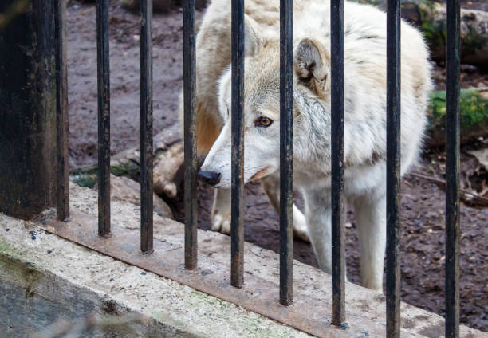

{kind=link}
Need Help With an Animal?
Orphaned or Injured Wildlife:
If safely possible, keep the animal contained in a quiet, safe dark area with as little stimulation and human/pet traffic as possible and do not handle it. I do not recommend attempting to feed wildlife you find until they get to a rehabber, as it may do more harm than good if the animal is not yet stabilized and hydrated.
Locate the closest state-licensed wildlife rehabilitator who works with the species:

Captive-Bred or Non-Releasable Wildlife:
Need placement for a captive-born fox, wolfdog, or other exotic pet or rescue?
Since these animals are born in captivity, this means that they must stay in captivity, as it
is both illegal and immoral to release a captive-bred wild animal. Please feel free to send me a
detailed email if you need assistance. Include the species, age, vet history (if any), temperament,
any important details or quirks, and photos of the animal.
Please note that depending on the species of animal and my capacity limitations, I cannot guarantee
that I can intake your animal.